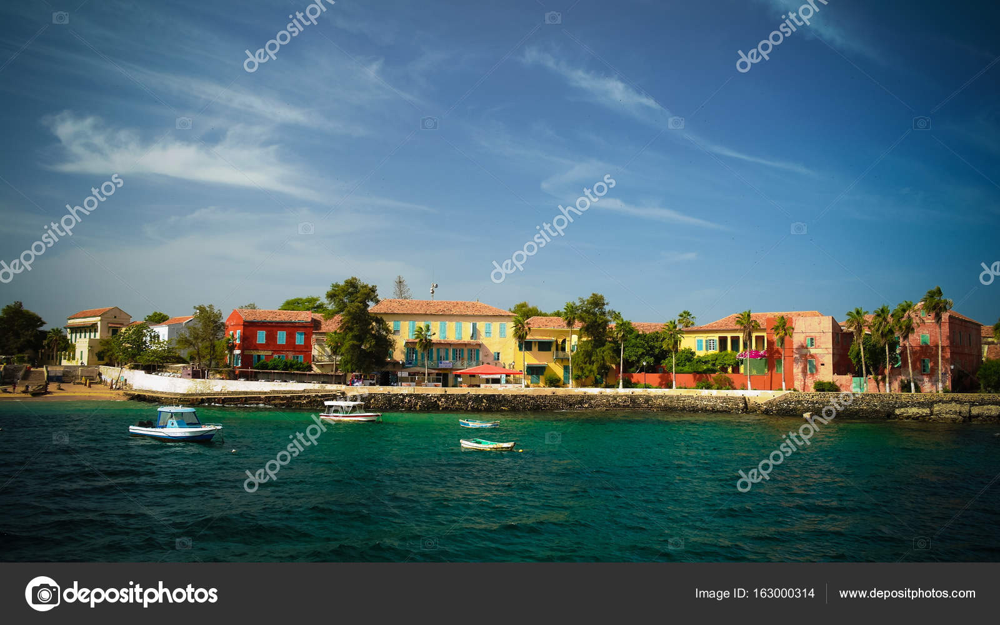
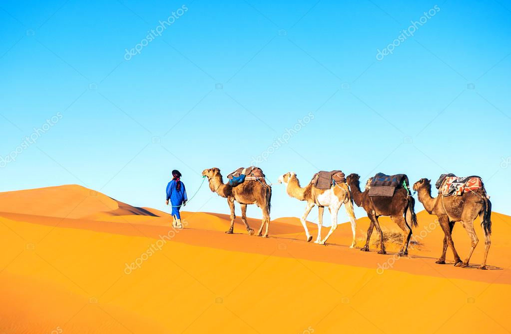
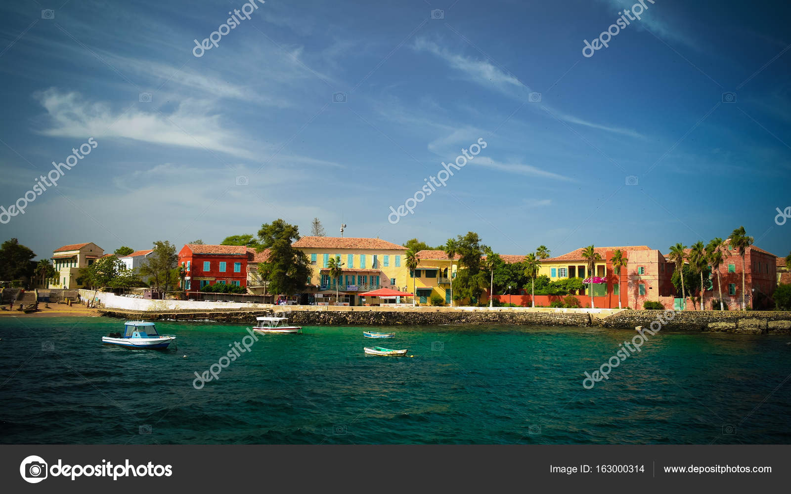
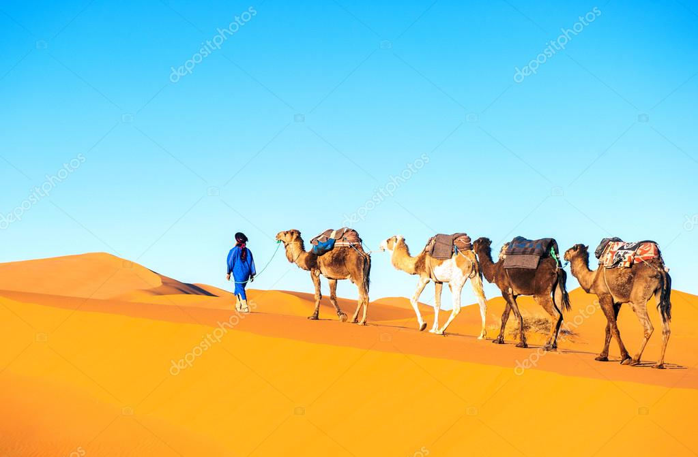
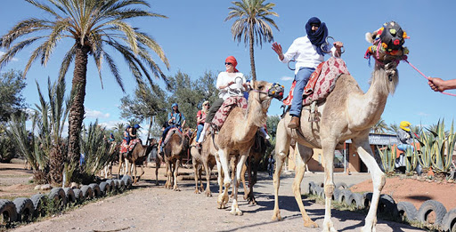
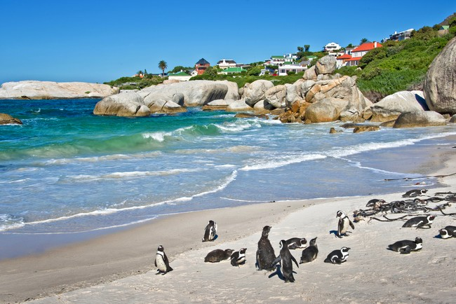

.jpg)
TOURISME AFRIQUE
En 2013, le tourisme africain représente 4 % du tourisme mondial1. Toutefois, il attire de plus en plus de visiteurs, comme le démontrent les chiffres de 2013, qui enregistrent 200 000 visiteurs de plus. Le secteur représente 7,1 % des emplois sur le continent, avec 20 millions de travailleurs dans le domaine. Il est considéré comme un moteur de croissance économique pour le continent par la Banque mondiale2. En 2017, le Forum économique mondial classe l'Afrique du Sud comme le pays le plus compétitif dans le secteur 3.
L’Afrique a accueilli 57,8 millions de touristes en 2016, soit 4,4 millions de plus qu’en 2015, apportant 34,8 milliards de dollars de recettes touristiques. Cela représente seulement 5 % du total de voyageurs dans le monde, mais leur nombre pourrait atteindre les 134 millions en 2030, estime l’Organisation mondiale du tourisme dans son rapport annuel publié 15 août 2017. Après l'Afrique du Sud et le Maroc, le Rwanda s'impose comme troisième destination du continent avec 1,2 million de visiteurs par an en se positionnant sur le haut de gamme et le tourisme d’affaires. Les plus fortes progressions sont Madagascar (+20 %), le Kenya (+ 17 %), la Tanzanie (+ 16 %), le Cap-Vert (+15 %), l’île Maurice (+11 %), les Seychelles et l'Afrique du Sud (+ 10 %) alors que le Maghreb repasse dans des valeurs positives grâce à une amélioration de la sécurité des voyageurs4.
.jpg)
.jpg)
|
iles de gorée L'un des sites touristiques les plus visités du Sénégal, l'île de Gorée au large de Dakar, ouvre samedi ses portes aux visiteurs. Ancienne plaque tournante de la traite transatlantique des esclaves, Gorée a été fermée pendant six mois en raison de la pandémie de coronavirus, qui a porté préjudice à son économie. Un nombre limité de touristes par jour peut désormais visiter le site du patrimoine mondial, qui a été l'un des premiers établissements européens sur le continent africain. |
.jpg)
PARCS SAFARI
Les récentes annonces selon lesquelles Le Cap, destination touristique prisée en Afrique du Sud, serait bientôt sans eau en raison d’une sécheresse prolongée semblent n’avoir eu aucun impact sur l’industrie touristique florissante du pays. Les services publics de l’eau ont pourtant prévenu : Le Cap pourrait bientôt devenir la première grande ville au monde à ne plus avoir d’eau. |

MAROC
Le Maroc a franchi le cap des 12 millions de touristes. Il s’agit d’une progression de 8.3% par rapport à 2017, puisque 12,3 millions de touristes ont visité le Maroc l’année dernière. Selon les données de l’Observatoire du Tourisme, le Maroc a enregistré une hausse de +14% des arrivées des touristes étrangers et +2% des Marocains résidant à l’étranger. Les principaux marchés émetteurs ont également enregistré des hausses considérables, en particulier, l’Italie et l’Allemagne (+15% et +10% respectivement), suivis de la France et l’Espagne (+8% et +6% respectivement). |
|---|
.jpg)
SALI MBOUR Quand on parle de tourisme au Sénégal, un nom revient toujours : Saly-Portudal. Une station balnéaire accolée à Mbour et entièrement vouée, depuis les années 1980, au tourisme de masse. Rien de spécial à y faire, à part bronzer en sirotant des cocktails au bord de la piscine de l'hôtel. L'Afrique y est comme absente ! |
.jpg)
plage de MAROC
Le Maroc, pays d'Afrique du Nord sur le littoral de l'Atlantique et de la Méditerranée, se distingue par ses influences berbères, arabes et européennes. La médina de Marrakech, quartier médiéval aux allures de labyrinthe, est un lieu animé, avec sa place Jemaa el-Fna et ses souks (marchés) vendant des céramiques, des bijoux et des lanternes en métal. La casbah des Oudayas à Rabat, la capitale, est un fort royal du XIIe siècle qui surplombe l'océan |

plage SUD AFRIQUE
L'Afrique du Sud est un pays situé à l'extrémité australe du continent africain et composé de différents écosystèmes. À l'intérieur des terres, le parc national Kruger abrite du gros gibier et propose des safaris. Le Cap occidental offre des plages, des vignobles luxuriants autour de Stellenbosch et Paarl, des falaises rocheuses au cap de Bonne-Espérance, des forêts et des lagons le long de la Garden Route, ainsi que la ville du Cap, située au pied de la montagne de la Table au sommet pla |
|---|